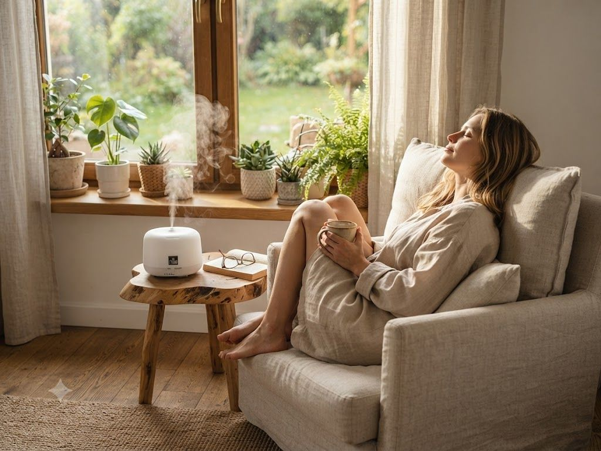

🌿 Lekce 8
tichý pomocník s kořeny ve starověkém Egyptě
Difuzér je moderní pomocník pro aromaterapii, jejíž kořeny sahají až do starověkého Egypta. Staví na principech holistické medicíny a stará se o provonění i harmonizaci vašeho domova.

Maximální účinnost: oleje nerozpouští teplem, ale mění je na mikročástice, které tělo snadno vstřebává a zachovávají si 100% terapeutické vlastnosti.
Tělo i mysl v rovnováze: pomáhá uvolnit stres, zklidnit roztěkanou mysl, usnadnit dýchání a celkově posilovat organismus.
Zdravější a příjemnější prostor: eliminuje bakterie, prachové roztoče i nepříjemné pachy a zároveň vytvoří útulnou atmosféru pro relaxaci.
Bez chemie: provoníte domov bez toxických aromat.
Základem je šetrná ultrazvuková technologie. Difuzér přeměňuje směs vody a esenciálního oleje na miliony mikročástic (studenou vodní mlhu), kterou následně rovnoměrně a tiše vhání do místnosti.
Do difuzéru nalijte destilovanou vodu a nakapejte cca 5 kapek esenciálního oleje (např. levandule nebo citron) — dávkování závisí na síle konkrétního oleje a na velikosti prostoru, později můžete množství zvyšovat dle potřeby.
Všeobecně se doporučuje esence difundovat zpočátku 15–30 minut a postupně dobu rozptylování prodlužovat.
Difuzér mění oleje na jemnou mlhovinu bez tepla, takže na rozdíl od aroma lampy zachovává jejich terapeutické vlastnosti.
Mikročástice tělo snadno vstřebává, pomáhá uvolnit stres a zklidnit mysl.
Ultrazvuková technologie přemění směs vody a oleje na studenou mlhu, kterou tiše rozptyluje do místnosti.
Jako registrovaný zákazník získáte slevu až 50 % na vybrané produkty.
Další lekce: Nosné oleje — pokračovat →